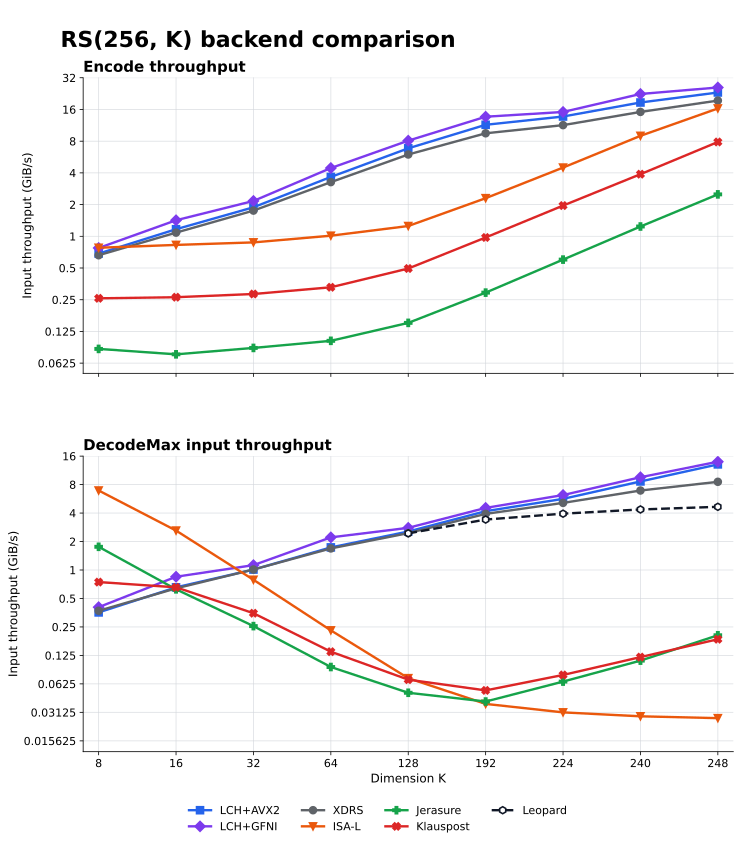

Code shape
K = 8, 16, 32, 64, 128, 192, 224, 240, and 248. Recovery count is R = 256 - K. Native Leopard is shown only where R is not greater than K.
GF(256) / Lin-Chung-Han additive FFT
Systematic RS(256, K) encode and maximum-erasure decode throughput, comparing the owned LCH implementation with five external reference paths.

Six series receive the same nine full-length K/R cases and deterministic maximum-erasure workload: two owned LCH backends plus XDRS, ISA-L, Jerasure, and klauspost. Native Leopard receives its five valid high-rate cases. External setup differences are made explicit rather than hidden behind a synthetic common API.
K = 8, 16, 32, 64, 128, 192, 224, 240, and 248. Recovery count is R = 256 - K. Native Leopard is shown only where R is not greater than K.
Exactly R symbols are shuffled across data and recovery positions. Timed throughput uses the paper-compatible K x bytes input metric, not recovered-output volume.
CPU0 pinned, 1 second warmup, at least 0.2 seconds per repetition, and randomized ten-repetition C++/Go chunks. The current harness verifies every row outside timing. This long run predates the native XDRS encode check; all nine XDRS encode configurations were subsequently output-verified under the final harness.
Selected points from the complete dataset, in GiB/s. The graph above contains every measured K value.
| Backend | Encode K128 | Encode K248 | Decode K128 | Decode K248 |
|---|---|---|---|---|
| LCH+GFNI | 8.09 | 25.87 | 2.79 | 13.96 |
| LCH+AVX2 | 6.84 | 23.20 | 2.55 | 13.08 |
| XDRS | 5.98 | 19.43 | 2.45 | 8.56 |
| Leopard | 6.24 | 20.12 | 2.44 | 4.66 |
| ISA-L | 1.25 | 16.36 | 0.072 | 0.027 |
| Jerasure | 0.151 | 2.50 | 0.050 | 0.204 |
| klauspost | 0.494 | 7.86 | 0.069 | 0.185 |
| Backend | K8 | K16 | K32 | K64 | K128 | K192 | K224 | K240 | K248 |
|---|---|---|---|---|---|---|---|---|---|
| LCH+GFNI | 0.775 | 1.421 | 2.166 | 4.447 | 8.093 | 13.656 | 15.149 | 22.458 | 25.874 |
| LCH+AVX2 | 0.686 | 1.168 | 1.886 | 3.661 | 6.844 | 11.446 | 13.717 | 18.634 | 23.198 |
| XDRS | 0.661 | 1.084 | 1.754 | 3.269 | 5.979 | 9.507 | 11.361 | 15.165 | 19.434 |
| Leopard | not run | not run | not run | not run | 6.240 | 10.053 | 11.859 | 15.954 | 20.118 |
| ISA-L | 0.779 | 0.828 | 0.875 | 1.014 | 1.252 | 2.301 | 4.493 | 8.992 | 16.356 |
| Jerasure | 0.0853 | 0.0758 | 0.0872 | 0.102 | 0.151 | 0.292 | 0.601 | 1.239 | 2.501 |
| klauspost | 0.258 | 0.264 | 0.283 | 0.328 | 0.494 | 0.975 | 1.957 | 3.888 | 7.861 |
| Backend | K8 | K16 | K32 | K64 | K128 | K192 | K224 | K240 | K248 |
|---|---|---|---|---|---|---|---|---|---|
| LCH+GFNI | 0.405 | 0.849 | 1.126 | 2.214 | 2.792 | 4.535 | 6.200 | 9.567 | 13.958 |
| LCH+AVX2 | 0.356 | 0.656 | 1.011 | 1.733 | 2.552 | 4.186 | 5.649 | 8.634 | 13.079 |
| XDRS | 0.371 | 0.639 | 1.012 | 1.690 | 2.453 | 3.921 | 5.122 | 6.925 | 8.558 |
| Leopard | not run | not run | not run | not run | 2.441 | 3.414 | 3.940 | 4.364 | 4.655 |
| ISA-L | 6.927 | 2.610 | 0.788 | 0.230 | 0.0718 | 0.0384 | 0.0312 | 0.0284 | 0.0271 |
| Jerasure | 1.759 | 0.625 | 0.255 | 0.0942 | 0.0503 | 0.0407 | 0.0661 | 0.110 | 0.204 |
| klauspost | 0.745 | 0.656 | 0.349 | 0.137 | 0.0693 | 0.0533 | 0.0777 | 0.120 | 0.185 |
This WSL/AMD run remains environmentally noisy: CPU-time coefficient of variation ranges from 7.2% to 41.3%. Treat medians as local comparative evidence, not universal hardware rankings. Native XDRS, ISA-L, Jerasure, and klauspost use their own standard-coordinate code families; Leopard uses the compatible Cantor representation.